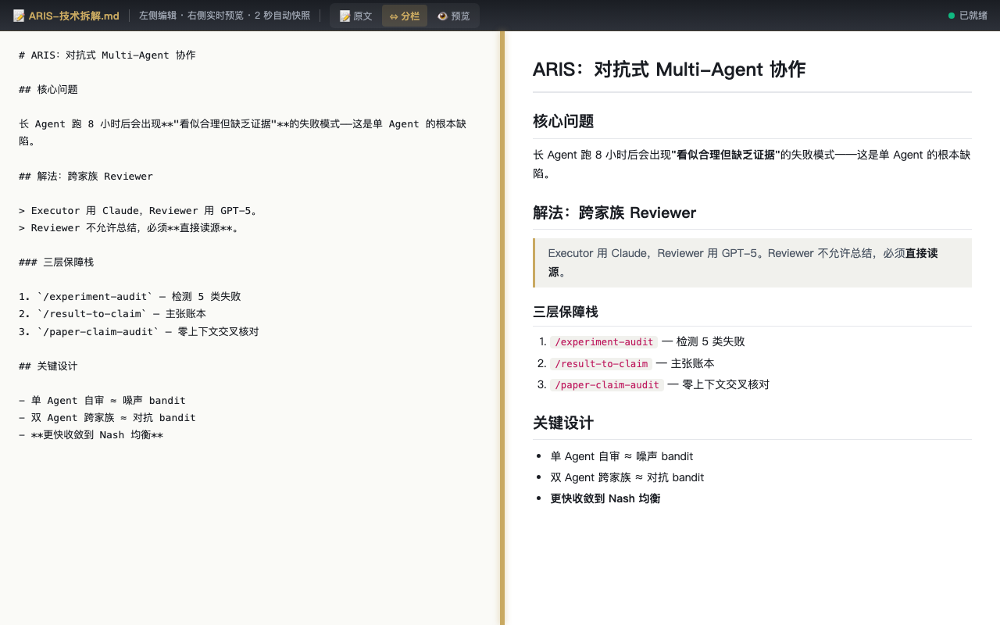
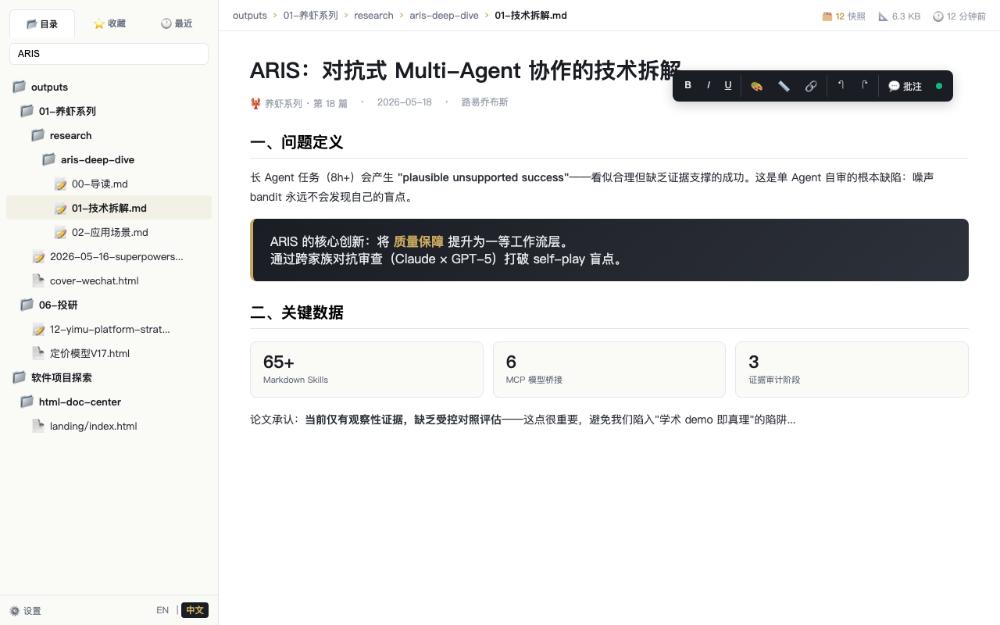
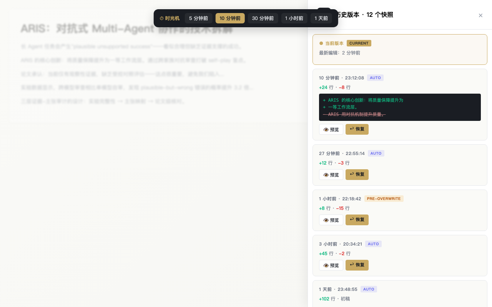
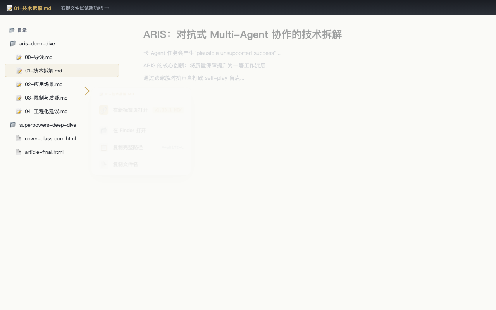

DocCenter 把你 workspace 里散落的报告、草稿、deck、复盘扫描成一棵目录树，就地编辑、停手 2 秒自动快照、可回到任意历史版本。一个 Python 文件 + 浏览器，不上云、不联网、不依赖 npm。
你和 AI 一晚上能产出 5 份 deck、3 份复盘、2 份周报。第二周想找上周那张图，在 5 个目录里翻得满头大汗。这不是个例——这是所有 AI Native 工作流的通病。
HTML 和 md 报告分散在 outputs/、drafts/、reports/ 各处。每次找文件都要 find 一下，更别说"看上次做的那张数据图"。
浏览器只能"看"不能"改"。改个错字要回到 VSCode → 找到 HTML → 改源码 → 刷新——5 步。改完忘了保存，又被 AI 下次重写覆盖。
"昨天那版字号大一点的能找回吗？" → 没法。AI 流水覆盖式生成，没人在每次"差不多"的时候帮你打 git tag。改坏了 = 毁掉了。
写 md 长文最痛的是屏幕被强制切一半。VSCode 不支持，Obsidian 不支持，Typora 也不支持——DocCenter 给 md 文件加了三档视图切换 + 可拖拽分栏条。
专心写 → 切「📝 原文」全屏；专心读 → 切「👁 预览」全屏；对照写 → 「⇔ 分栏」+ 拖动比例。视图模式和分栏比例自动记到 localStorage，下次打开自动恢复。

启动 python3 server.py，浏览器打开 localhost:9901。DocCenter 自动扫描你设置的目录，所有 .html 和 .md 文件渲染成左侧目录树。
点击任意文件——右侧 iframe 直接渲染、注入轻量编辑器、可批注、可保存。不用切 IDE、不用 git checkout、不用上传到云端。

这是 DocCenter 最"上瘾"的功能：停止编辑 2 秒，DocCenter 自动写一份快照到 _auto-save/。整个文件的演化由此可回溯。
顶部「⏱ 时光机」快捷条让你一键回到「5 分钟前 / 1 小时前 / 1 天前」的版本。历史抽屉里有行级 diff、恢复前自动备份当前版本。改坏了 = 撤回；找"那版数据图" = 翻历史。

右键文件菜单：🔗 在新标签页打开 / 📂 在 Finder 打开 / 📋 复制路径 / 📄 复制文件名。多文件对比阅读从 5 步缩到 1 步。
侧栏支持拖拽移动文件 / 目录（跨扫描根），全局快捷键 H 历史 / R 刷新 / / 搜索 / ? 帮助 / T 切主题。

DocCenter 不是"打开来看一下"那种工具——它是开机自启常驻 localhost:9901 的工作台。下面是一个真实的工作日。
打开昨晚和 AI 起的 md 草稿——切「📝 原文」全屏写正文，停手 2 秒已经默默存了快照。中午改了 4 版，没动一次 git。
切「👁 预览」全屏读，找到需要重写的段落 → 切回「⇔ 分栏」+ 拖到 30/70 比例 → 左侧改源、右侧实时看渲染。
"等等，刚才那段写得更好——按 H 翻历史抽屉 → 找到 1 小时前的版本 → 行级 diff 看清差异 → 一键恢复（旧版自动备份）。
DocCenter 不是替代品。它不擅长协作（这是 Notion 的活），不擅长写代码（这是 VSCode 的活）。它擅长的是——AI 写完之后那个尴尬的中间地带：本地、产物、可改、可回溯、不上云。
| 能力 | DocCenter | 浏览器直接打开 | VSCode | Notion / 飞书 |
|---|---|---|---|---|
| 统一浏览本地 HTML / md | ✓ | — 各自打开 | ~ 没渲染视图 | — 不在本地 |
| 就地编辑保存 | ✓ 浏览器内 | — 只读 | ~ 改源码 | — 必上传 |
| 自动快照 + 历史回溯 | ✓ 停手 2s | — 无 | ~ 靠 git commit | ~ 历史不细 |
| md 三视图 + 拖拽分栏 | ✓ | — 不渲染 md | ~ 插件勉强 | — 不灵活 |
| 纯本地 / 零云端 | ✓ 127.0.0.1 | ~ 视情况 | ~ 视插件 | — 必上传 |
| 零依赖（一个 Python 文件） | ✓ aiohttp | — N/A | — 大 IDE | — 大型 SaaS |
| 开源 MIT | ✓ | — N/A | ~ 部分 | — 闭源 |
不需要 Node、不需要 npm、不需要 docker。Python 3.8+ 自带 venv 即可。
左下角 ⚙️ 设置面板 → 「扫描目录」→ 添加你想浏览的目录绝对路径。可加多个。
点击任意 HTML / md 文件，右侧自动注入编辑器。改一改、停 2 秒、自动快照，关闭时弹「覆盖 / 另存 / 丢弃」三选一。
按 H 打开历史抽屉，时光机快捷条点「5 分钟前」一键穿越。行级 diff 看清每次改动。